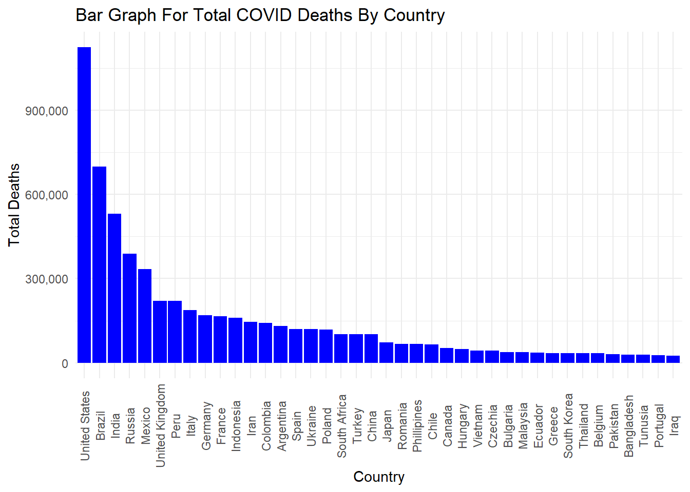

#Importing necessary modules
suppressPackageStartupMessages(library(tidyverse))
suppressPackageStartupMessages(library(plotly))
library(tidyverse)
library(ggplot2)
library(plotly)
library(tidyr)Redesign Visualization
Redesign 1:
The report used for redesign 1 is shown below
The above chart is supposed to show a comparison. Eventhough this plot shows change in trend overtime for both Newspaper publisher and Digital native, there are few backlogs present in the data.
Only the starting and ending points are labelled, making it harder to track how the value changes over the 12 years. This limits the chart ability to provide detailed insights.
The design does not effectively highlight the key insight that while newspaper employment plummeted, digital-native employment steadily grew. The decline of one trend visually dominates, reducing the impact of the other.
Hence redesigning the given report to understand the changing trend better.
#Getting the types of news publisher data
df = read.csv('Redesign1/news_report_data.csv')From this data we will take only Year, Total, Newspaper.publishers, Digital..native to analyze the data.
df1 = df[c('Year','Total','Newspaper.publishers','Digital..native')]Now gathering Newspaper.publishers and Digital..native under column Sector and its value under Employment so that creating graph for each sector would be easy for us
data_long <- gather(df1, key = "Sector", value = "Employment", -Year, -Total)Now we try to analyze the trend between the two sectors
plot1=ggplot(data_long, aes(x = as.factor(Year), y = Employment, color = Sector,label=Sector)) +
geom_segment(aes(xend = as.factor(Year), yend = 0), color = "black", size = 0.5) + # Black horizontal lines
geom_point(size = 3) + # Points for each sector and year above the line
theme(axis.text.x = element_text(angle = 90, vjust = 0.5)) +
scale_x_discrete() +
labs(title = "Newsroom Employment in US for Newspaper Publisher vs Digital Native",
x = "Year", y = "Employment")Warning: Using `size` aesthetic for lines was deprecated in ggplot2 3.4.0.
ℹ Please use `linewidth` instead.ggplotly(plot1,tooltip = c("y","label"))From the above interactive chart we can able to see the change in employment for both the sectors.
Unlike the given plot, we can able to witness the change for every year.
Apart from that we can see the distance between both sectors reducing over time and it became very less in the year 2020 which shows the impact of the changing trends very clearly.
plot2 = ggplot(data_long,aes(x=as.factor(Year),y=Employment,fill = Sector,label=Sector))+geom_bar(stat = "identity",position = "dodge",width = 0.75)+theme(axis.text.x = element_text(angle = 90, vjust = 0.5))+scale_x_discrete()+labs(title = "Newsroom employment in US for Newspaper Publisher vs Digital Native",x="Year",y="Employment")
ggplotly(plot2,tooltip = c("y","label"))Redesigned the same report with stacked bar graph.
In this graph we can able to witness the length of digital native is very small when compared with Newspaper publisher in the year 2008 and we can able to see a sharp decreasing slope for newspaper publisher and increasing slope for digital native.
Due to change in both the sectors over years we can able to see in the year 2020, the height difference between both the sectors is not much.
Apart from redesigning the given plot, we have planned to analyze this report a bit more and try to understand how much percentage each sector changes every year.
#Table that contains %change in their employment from previous year
data_long <- data_long %>%
arrange(Sector, Year) %>% # Sort by sector and year
group_by(Sector) %>%
mutate(Percentage_Change = (Employment - lag(Employment)) / lag(Employment) * 100)plot3=ggplot(data_long,aes(x=as.factor(Year),y=round(Percentage_Change,2),fill=Sector,label=Sector))+geom_bar(stat="identity",position="dodge",width=0.75)+scale_x_discrete()+theme(axis.text.x = element_text(angle = 90, vjust = 0.5))+labs(title = "% Change of the Sectors in the trend over years",x="Year",y="Percentage Change")
ggplotly(plot3,tooltip = c("y","label"))From this graph we can able to understand that the newspaper publisher started to decrease drastically with -14.49% in the year of 2009 and kept on decreasing whereas for digital native the increase percentage starts with 9.32% and in the year of 2014 it decreased a bit of -0.62% after that it starts to grow till then.
And now we analyze the data a bit more to understand how much employment each sector has compared to overall sector employment.
#Getting percentage value of each sectors}
df$Percent_of_newspaper_publisher = df$Newspaper.publishers/df$Total
df$Percent_of_digital_native = df$Digital..native/df$Total
df$Percent_of_other_sector = (df$Broadcast.television + df$Radio.broadcasting + df$Cable.television)/df$Totalsector_percent_data <- df %>% pivot_longer(cols = c(Percent_of_newspaper_publisher,Percent_of_digital_native,Percent_of_other_sector),names_to = "Sector",values_to = 'Percentage') %>% select(Year,Sector,Percentage)ggplot(sector_percent_data,aes(x=as.factor(Year),y=Percentage,fill = Sector))+geom_bar(stat = "identity")+geom_text(aes(label = round(Percentage,2)), position = position_stack(vjust = 0.5),angle = 90)+scale_x_discrete()+theme(axis.text.x = element_text(angle = 90, vjust = 0.5))+labs(title = "% of employment of the Sectors over years",x="Year",y="Percentage of Employment")From the above graph, we can able to witness that in the year 2008 employment of newspaper publishers is 10 times more than digital native employment. But as time passes we can see a simultaneous change in both the trends in the year of 2020 newspaper publisher employment is 36% and digital native employment is 21%
Comment:
From the initial report, we can able to witness the change in trend but not clear as it depicts the value only at the start and end, secondly even though we can see a sharp shift in both the trends, from the redesign we can able to understand further, how much %change happened for both the sector over the year and how much changes happened in these two sectors employment in the newsroom at the year 2008 and the year 2020.
Hence these redesign helps to understand the change in trend a bit more clear.
Redesign 2:
The report used for redesign 2 is shown below
The original graph was a bar chart that displayed different countries and the number of COVID deaths in each country. The disadvantages of the original graph are you cannot tell which countries have more COVID deaths than others as well as having the bars horizontal makes it harder for the viewer to visualize.
In addition, there was no labels making the graph not complete in a sense no x-axis and y-axis on the graph, labels would it make it much easier for the viewer to see.
This visualization shows which countries had many COVID deaths compared to others, but currently this visualization makes it hard for the reader to see which country has the most total deaths from COVID.
#Importing Packages
suppressPackageStartupMessages(library(scales))
library(tidyverse)
library(ggplot2)
library(plotly)
library(tidyr)
library(dplyr)
library(scales)#Reading Dataset
covid_total_deaths = read.csv("Redesign2/COVID Analysis Total Deaths.csv")
head(covid_total_deaths) Country Total.Deaths
1 Argentina 130472
2 Bangladesh 29445
3 Belgium 33814
4 Brazil 699276
5 Bulgaria 38228
6 Canada 51720To improve the original visualization, a bar graph can be created in descending order to show which countries have the most COVID deaths. This bar graph would have an x-axis containing the country names and y-axis containing the total deaths. You will see the decline in COVID deaths as you move down the x-axis.
#Bar Plot Descending Re-Design
death_plot1 <- ggplot(covid_total_deaths, aes(x = reorder(Country, -Total.Deaths), y = Total.Deaths)) + geom_bar(stat = "identity", fill = "blue") + labs(x = "Country", y = "Total Deaths", title = "Bar Graph For Total COVID Deaths By Country") + theme_minimal() + theme(axis.text.x = element_text(angle = 90, vjust = 0.5)) + scale_y_continuous(labels = label_number(big.mark = ",", decimal.mark = "."))
death_plot1
From this graph you can able to see the decline in COVID deaths as you move down the x-axis.
Another re-design that can be done is a scatter plot to also show the COVID deaths per country. This is better because instead of seeing many different bars you can see dots so that its easier to read. The x-axis would also be country name, and y-axis would be number of COVID deaths.
#Scatter Plot Descending Re-Design
death_plot2 <- ggplot(covid_total_deaths, aes(x = reorder(Country, -Total.Deaths), y = Total.Deaths)) + geom_point(shape = 21, fill = "red", color = "black", size = 3) + labs(title = "Scatter Plot For Total COVID Deaths By Country", x = "Country", y = "Total Deaths") + theme_minimal() + theme(axis.text.x = element_text(angle = 90, vjust = 0.5)) + scale_y_continuous(limits = c(0, max(covid_total_deaths$Total.Deaths) + 1000), labels = label_number(big.mark = ",", decimal.mark = "."))
death_plot2The scatter plot above shows COVID deaths by countries in descending order. As you can see the US has the most COVID deaths and Iraq with the least COVID deaths. China has the most COVID dosages given therefore their death rate is the least compared to other countries.
Comment:
I gathered data for COVID deaths and decided to organize the data in descending order so it was easier to see which countries had more COVID deaths and the least COVID deaths. For the scatter plot we used geom_point so that we can show the scatter plot values on the graph and made the dots red. On the bar graph we used geom_bar to display bars for the COVID deaths in blue. Both re-designs show countries from most COVID deaths to least COVID deaths meaning it was organized in descending order by country.
In conclusion, the next re-design that can be done for this COVID deaths dataset is a map visualization showing low and high concentration of COVID deaths per country. In order to complete this visualization, we will need to add latitude and longitude of the countries to accurately show and depict the data. Overall our re-design is much better than the original visualization since you can clearly tell which countries have more versus less COVID deaths.